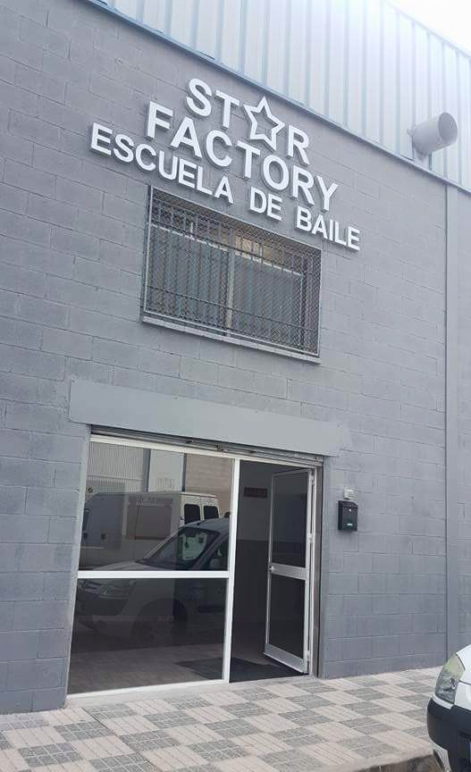

El baile
El baile es una parte fundamental en mi vida, llevo desde los 5 años bailando.Empecé en ballet y estuve hasta los 7 años,
de todas las modalidades que he practicado sin duda es la que menos me ha gustado porque requería mucho esfuerzo y dedicación
y yo aún era muy pequeña. A los 10 años empecé hip hop en Star Factory y a los doce años me cambié para ir a dance urban en Star Factory también.
Actualmente sigo en dance urban y es mi modalidad favorita de las que he practicado.
INDICE:
· ¿De que tratan las distintas danzas que he practicado?
· ¿Qué puertas me ha abierto?
